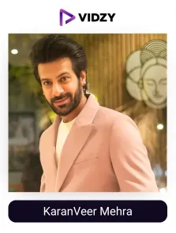
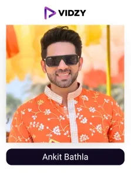
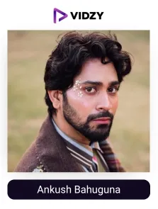
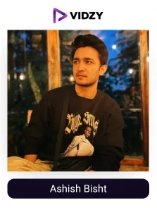
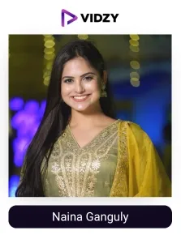
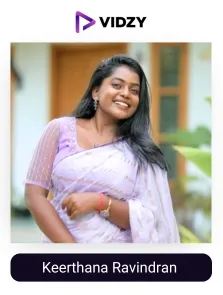
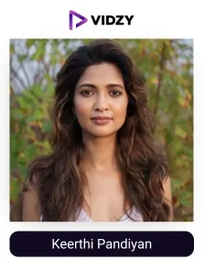
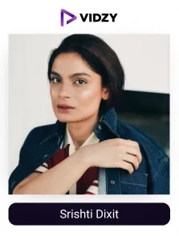
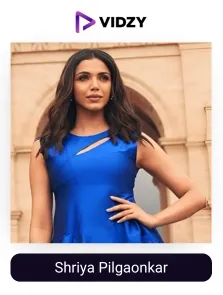

Entertainment adds an extra spark to our lives. A funny reel or an amazing piece of entertaining drama can let our minds have the much-needed break from regular chaos. At the same time, it also helps us learn new things in life and explore our interests.
Today, social media platforms are the biggest contributors of entertainment-rich content. In India alone, there are 362.9 million active users of platforms like Instagram, showcasing how popular it has become for people's entertainment needs. It allows people to easily access and enjoy all kinds of entertaining content. A study shows that 86% of users utilise Instagram for their entertainment purposes, focusing on its role as a go-to source for enjoyable content.
Behind these exciting experiences are India’s top entertainment UGC creators. They create fresh, relatable and enjoyable content, thereby influencing people's opinions and preferences regarding brands’s products and services. This potential makes them ideal partners for brands seeking to connect with their potential customers and drive impactful results as a boost in visibility and conversions.
A notable example is Nykaa Fashions. They have partnered with Kusha Kapila for their “Stay Stylish” campaign. With her humour and creativity, she effectively delivered content promoting Nykaa’s stylish clothing, which gathered wide attention across social media, helping Nykaa connect with its fashion enthusiast audience, boost visibility, and drive conversions.
Top brands are tapping into the power and influence of these ugc creators to create entertaining, relatable, and effective content that combines both humour and brand message easily, leading to impactful outcomes. The entertainment market in India is expected to reach an estimated revenue of US$ 10,172.7 million by 2030, showcasing the potential of entertainment creators in driving the industry forward with remarkable results.
In this blog, we will learn about the list of top entertainment UGC creators in India, curated by the expert team of the best UGC agency in India, for brands to easily understand their influence and tap into their potential to reap unparalleled results.
Who are Entertainment UGC Creators?
Entertainment UGC creators are individuals who create and share their content related to various forms of entertainment on social media platforms as creative and engaging posts. With interactive live streams, behind-the-scenes updates to promote the latest songs, films, or web series, these creators keep their audience engaged and entertained. They add a personal touch to their work, which helps them build strong communities.
Top Entertainment UGC Creators in India
Contents
-

1. KaranVeer Mehra
Channel: KaranVeer Mehra
Followers: 949KEngagement Rate: 23.17%About The Influencers-
Karan Veer Mehra is a popular Indian actor known for working in TV shows, movies, and web series. He has won reality shows like Khatron Ke Khiladi 14 and Bigg Boss 18. His Instagram is full of fun and interesting content. He shares reels showing his acting skills and behind-the-scenes moments from his shows.
Karan also posts little vlogs where he talks to his followers and shares what’s going on in his life. Sometimes, he even shares fan edits and replies to fans, which makes his page feel friendly and real. His Instagram feed is a great mix of work, fun, and personal moments.
-
2. Rj Alok
Channel: Rj Alok
Followers: 1MEngagement Rate: 1.50%About The Influencers-
Alok is a famous entertainment journalist and former radio jockey. His Instagram page is full of fun and relatable content. He shares content on cricket, funny situations, memories from school days, and various other trending topics. Some of his popular reels include ones like “Dear Cricket, give me one more chance” and “Kandhe Pe Mera Bastaaaaaa.”
He also talks to his followers in the comments and shares their content, making them feel connected to him. His Instagram feed also displays his love towards poetry, art and travel. The audience loves to engage with his entertaining and informative content.
-

3. Ankit Bathla
Channel: Ankit Bathla
Followers: 992KEngagement Rate: 1.32%About The Influencers-
Ankit is a popular actor and anchor living in Mumbai. He shares content on the events where he captures the audience with his anchoring skills. He has also worked in many TV serials, connecting with millions of hearts.
He also shares his regular workout routines and motivates his followers to stay healthy and active. His posts are very engaging, which his followers love to engage with, and adore him as one of the best entertainment creators in the industry.
-

4. Ankush Bahuguna
Channel: Ankush Bahuguna
Followers: 1.3MEngagement Rate: 3.38%About The Influencers-
Ankush Bahuguna is a popular content creator. He became well-known for his funny videos and makeup tutorials. He started his journey by posting makeup tips, and his channel grew quickly. His ability to blend comedy with beauty and lifestyle makes him a talented creator.
He also shares his interactions with celebrity guests. He has attended events like the Cannes Film Festival and Milan Fashion Week. Many top brands have collaborated, like Samsung, Fastrack, Coach, and Louboutin has collaborated with him.
-

5. Ashish Bisht
Channel: Ashish Bisht
Followers: 981KEngagement Rate: 1.79%About The Influencers-
Ashish is an entertainment creator and actor based in India. He shares a variety of content, including comedic skits, lifestyle posts, and his collaborations with other creators.
He is also an actor who has displayed his skills on shows like Shab on ZEE5. He has a huge social media following spanning multiple platforms, with more than one way to entertain his audience.
-

6. Naina Ganguly
Channel: Naina Ganguly
Followers: 1MEngagement Rate: 1.30%About The Influencers-
Naina is a charming content creator who entertains and inspires her audience. Her pleasing personality is much adored by her millions of followers. She is also a famous actress in the Telugu industry. Other than entertaining videos, she also creates fashion-related posts.
Her pleasing personality and simple way of expressing herself have let her climb the echelons of the Indian media and entertainment industry. Naina has an active community that engages with her every post.
-

7. Keerthana Ravindran
Channel: Keerthana Ravindran
Followers: 619KEngagement Rate: 6.04%About The Influencers-
Keerthana is an entertaining digital creator who also focuses on lifestyle and fashion. She creates funny reels accompanying her friends and family. She is a diva with multiple talents, recognised for acting, singing, and dancing. At present, she is active on multiple social media platforms and has a loyal fan base of millions. She uploads at least one post every day, predominantly videos.
The entertainment Influencer also recreates funny Instagram trends, performs comical skits, dances, and shares moments with fans. She posts about lifestyle and fashion tips and keeps her followers updated on her various collaborations.
-

8. Keerthi Pandiyan
Channel: Keerthi Pandiyan
Followers: 607KEngagement Rate: 9.31%About The Influencers-
Keerthi is an Indian actress and entertainment creator known for her work in Tamil cinema. She began her career as a ballet and salsa dancer. She creates fun reels with her friends and co-stars. She also promotes her work on OTTS and other platforms to keep her work updated among her followers.
She also shares behind the scenes and making glimpses of her work, making her fans connect with her easily. Renowned brands had worked with this entertainer and artist to promote their products and services.
-

9. Shristi Dixit
Channel: Shristi Dixit
Followers: 737KEngagement Rate: 1.26%About The Influencers-
Srishti Dixit is a well-known entertainment creator based in Mumbai. She is popular for her comedic sketches and amazing way of storytelling. Her content is full of fun, laughter and enjoyment.
Her audience loves to engage with her entertaining posts. Srishti continues to entertain and inspire her audience with her unique blend of humour and authenticity.
-

10. Shriya Pilgaonkar
Channel: Shriya Pilgaonkar
Followers: 997KEngagement Rate: 1.27%About The Influencers-
Shriya Pilgaonkar is a famous Indian actress known for her achievements in the entertainment industry. She is also a director and producer. She has worked in many projects, mostly in Hindi films and web series. Her acting skills in the film Fan have earned her national appreciation. Her followers love her humble personality, entertaining skills and amazing fashion sense.
To say about her content delivery skills, she shares information on teasers and behind-the-scenes posts of her upcoming works in the most captivating and interesting ways. She is considered one of the top entertainment influencers, who, with her unique flair and ability to interact, has cemented her position well in the industry.
Conclusion:
As we approach the end of our blog, we understand that entertainment UGC creators are transforming the way we experience and engage with entertainment. Through their creative videos, relatable skits, movie reviews, and personal experiences, they bring stories to life and captivate audiences across the country. They create content that feels entertaining and relatable, helping entertainment brands enhance their awareness, connect with their audience, build trust and influence their choices, leading to an increase in sales.
Top entertainment brands in India are teaming up with popular UGC creators through the top UGC agency to boost engagement, grow their audience, and increase sales.
Ready to take your brand to the next level with engaging and powerful entertainment content? Partner with India’s top UGC creators through the leading UGC agency and watch your audience transform into passionate brand advocates. Get started now!